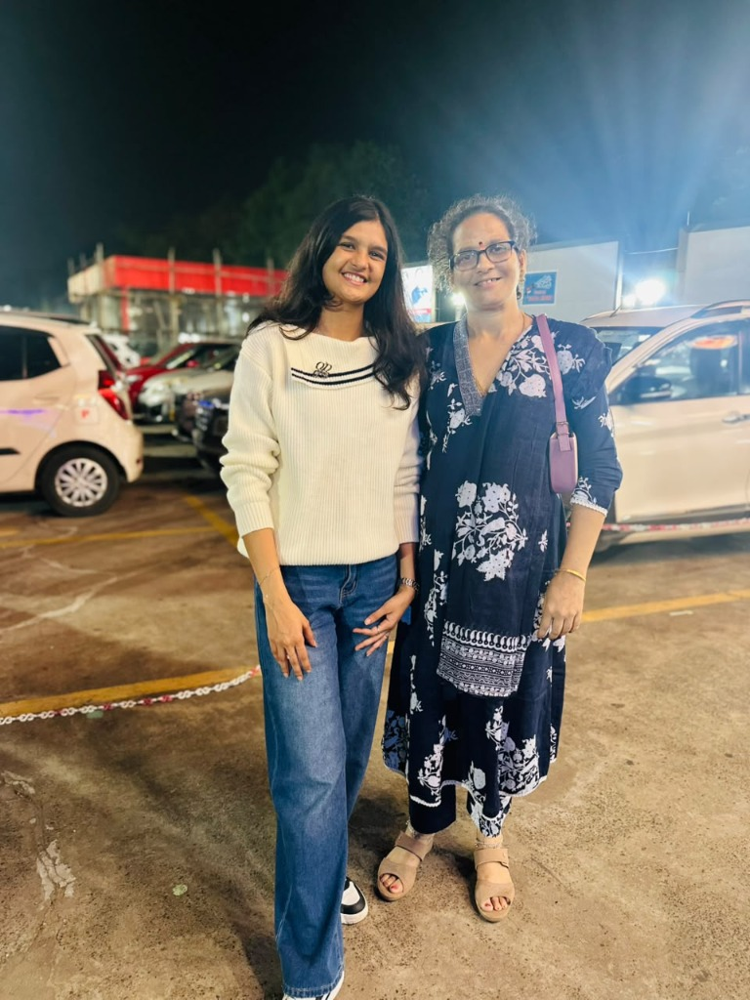

HER FIRST HOME
Her Mother
She grew up without a father beside her, but she was never without love. Her mother gave her the strength to face what life placed in front of her, and the tenderness to know she would always have somewhere safe to return to. She carried the responsibilities of two parents, turning difficult days into lessons in courage and filling their home with care. The bond they share is more than mother and daughter: it is trust, gratitude, and a lifetime of choosing each other.